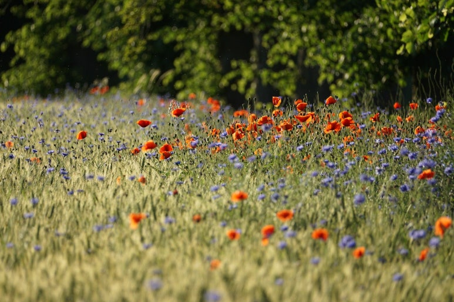

을유 시리즈
-
 책을 쓰는 과학자들
책을 쓰는 과학자들#5. “새들은 다 어디로 갔을까?”
『과학혁명의 구조』가 학계에 큰 영향을 주었다면, 같은 해에 출간된 또 다른 책은 전 세계에 더욱 막대한 영향력을 떨치고 대중에게 비교적 생소한 과학적 탐구 주제였던 환경주의를 소개했다. 전 세계에 더욱 막대한 영향력을 떨치고 대중에게 비교적 생소한 과학적 탐구 주제였던 환경주의를 소개했다.
-
나이 든다는 것에 관하여
#5. 내려놓고 있는 그대로 받아들이기
내려놓는 것은 이별하는 마음으로 살아가는 삶에서 중요한 주제다. 예전이었다면 극복할 수 있었거나 지나치게 과했던 우리 자신을 향한 요구 사항들을 이제는 감당할 수 없게 되었다. 이러한 것들을 가벼운 마음으로, 어쩌면 아쉬운 마음으로 내려놓아야 한다. 일상생활의 측면에서 볼 때 내려놓기라는 주제는 신체의 활동성을 통해 쉽게 확인할 수 있다. 이를테면 짐이 너무 무거워지면 내려놓아야 한다. 너무 힘들고 지치면 내려놓아야 한다. 또한 자신이 여전히 무엇이든지 할 수 있고 예전의 자신과 다를 바 없으며, 도움이 필요하지 않고 의존적이지 않다는 자아상도 내려놓아야 한다. 기존의 자아상과는 작별을 고해야 하며, 새로운 자아상을 통해 삶을 다시 새롭게 살아 나갈 수 있다.
-
빛의 얼굴들
#5. 아기 거북은 반짝이는 바다에 도달할 수 있을까
날이 어두워지고 파도 소리만 들리는 해변. 하얀 알껍데기에 균열이 가기 시작했다. 이윽고 깨진 알 속에서 아기 거북이 태어났다. 여기까지 온 과정도 결코 쉬운 일은 아니었다. 먼저 모래의 굵기와 온도, 바다와의 거리 등을 따져 보고 신중히 알을 낳은 어미 거북의 선택이 있었다. 모래가 너무 가벼우면 다른 동물에게 쉽게 파헤쳐지거나 쓸려서 알이 드러날 위험이 있다. 그렇다고 너무 깊고 단단하게 파묻으면 새끼가 알을 까고 나올 수 없다. 바다와의 거리 역시 중요하다. 너무 가까우면 만조 때 바닷물에 휩쓸려 물고기와 새우의 먹잇감이 되고, 너무 멀면 태어난 아기 거북이 바다에 닿기도 전에 모두 지쳐 버릴 것이다. 그렇게 최적의 장소에서 수십여 일을 무사히 버틴 거북 알만이 비로소 부화에 성공한다.
-
열심히 하지 않습니다
#4. 슈욱 사라진다
그런 질문은 난센스다. 이미 거의 할매가 다 된 사람한텐 말이다. 사람은 어느 날 갑자기 할머니가 되는 게 아니라, 스물네 살의 자만에 찬 젊은 시절부터 이미 서서히 할머니가 되기 시작하는 거다. 아니 다섯 살 여자아이도 보고 있으면 팔십 먹은 그 아이의 쇠락한 말로가 비쳐 보인다. 한마디로 말해서 그 사람이 아닌 다른 할머니는 될 수 없다는 거다.